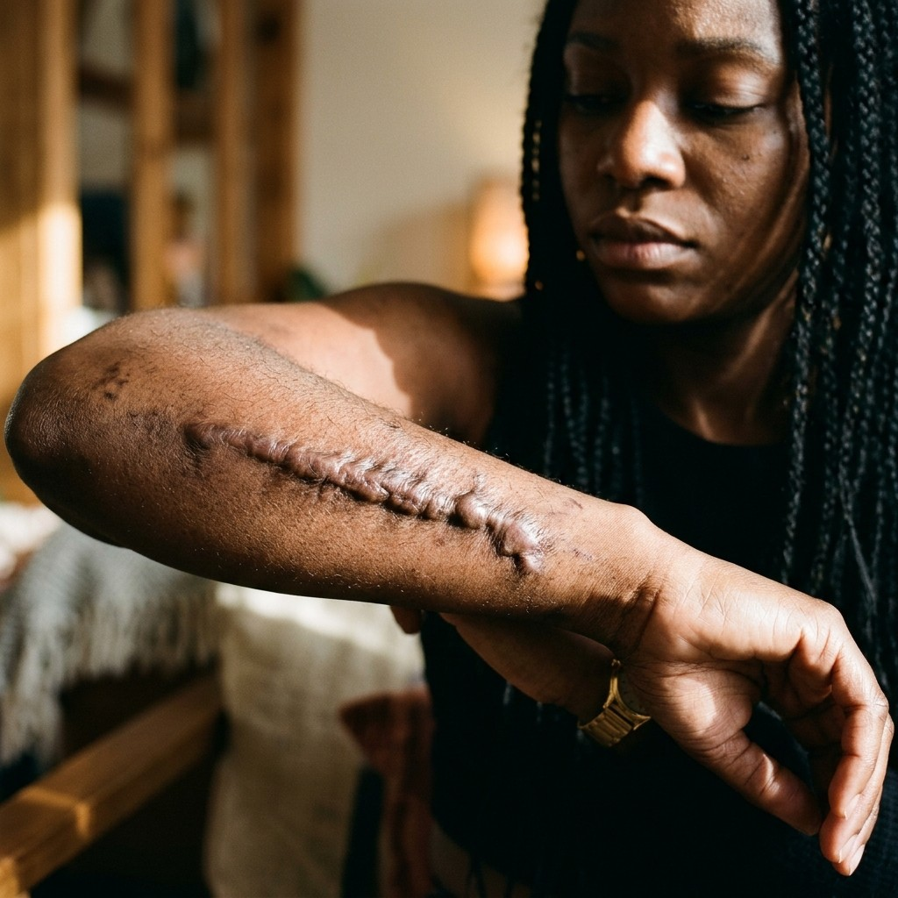
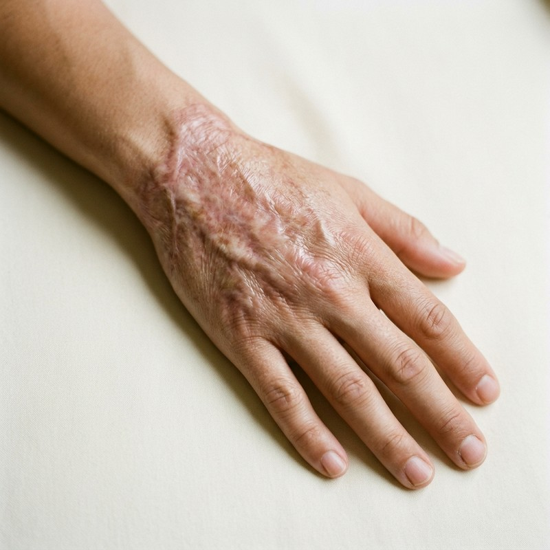
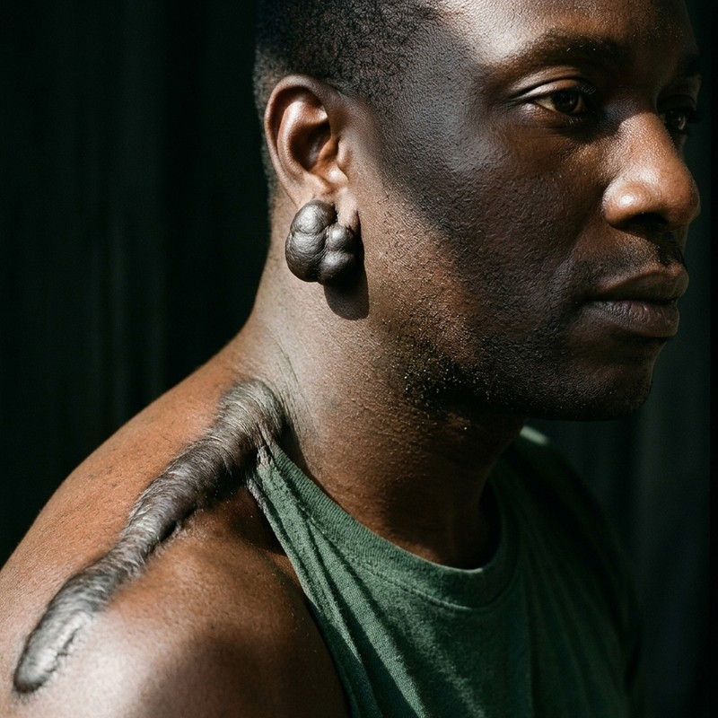
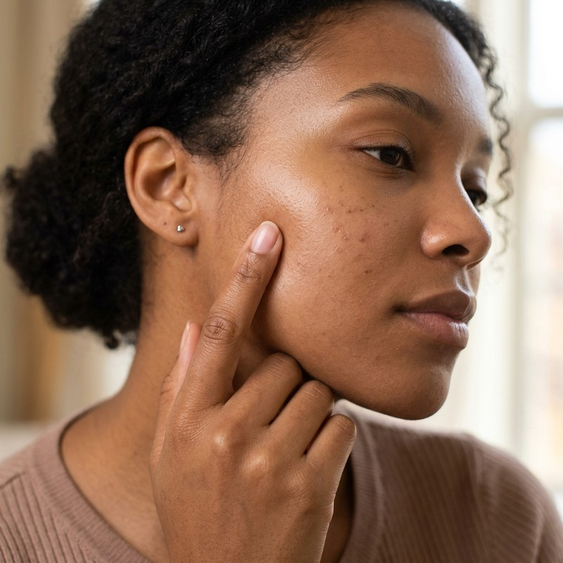
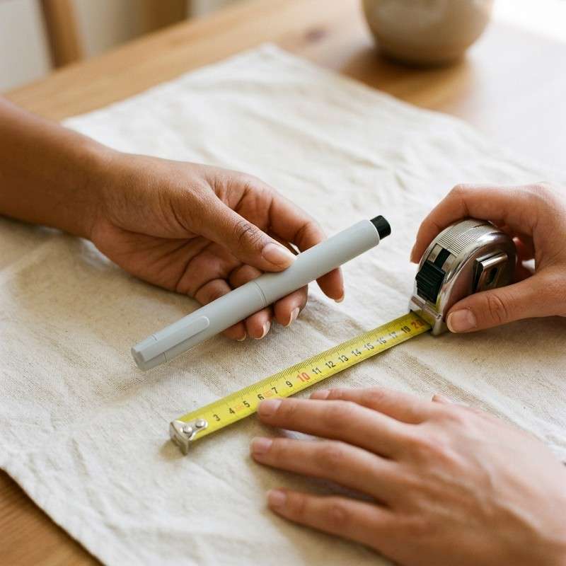
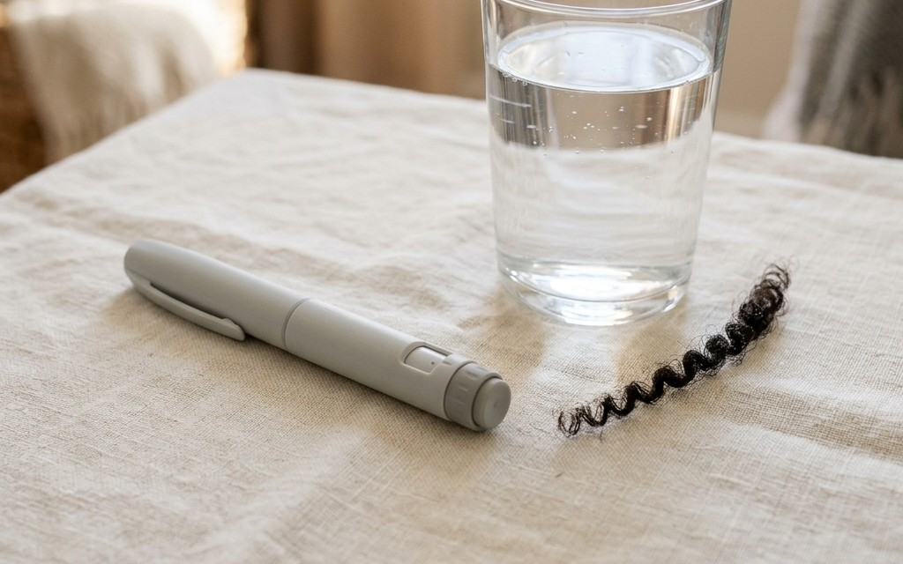

Healing skin. Restoring hair. Rebuilding confidence.
Dr. Wanjiru MD treats burns, scars, skin, hair and weight with one conviction: Black and melanin-rich skin deserves care designed for it, not borrowed from textbooks that forgot it.


Burns are the work that taught her everything else.
A burn is never only a surface problem. It changes how skin heals, how a joint moves, how a person walks into a room.
Burn and reconstructive surgery is the quiet specialty almost nobody markets, and the hardest school in plastic surgery. Every aesthetic treatment here inherits its discipline: gentle hands, honest timelines, and a deep respect for skin that scars, pigments and heals differently.
That is why a patient who comes for hair, a keloid or a glow-up gets the same careful planning as a patient rebuilding after a burn.
Read the burn story
Six specialities. One standard.
Each begins with a diagnosis, never a package.

01↗Burns & recovery
First aid, scar prevention, contracture release, and the long road after the wound closes.

02↗Scars & keloids
Raised, tight, dark or pitted: combination care for the scars others are afraid to touch.
Hair loss & restoration
Traction alopecia, CCCA, thinning, and transplants planned for tight coils.

04↗Skin of colour
Pigmentation, melasma, acne and razor bumps, treated without risking rebound darkening.
Non-surgical aesthetics
Botox, fillers, peels, microneedling and tightening: subtle, safe, tailored.

06↗Weight loss & GLP-1
Medically supervised, muscle-protecting, skin-aware weight care.
Four things almost nobody tells you.
Real change, honestly shown.
Drag to compare. Every case comes with its timeline, because healing is never overnight.


Forearm burn scarSilicone, injections and laser · 9 months


Hairline restorationTraction alopecia · 10 months


HyperpigmentationMedical-grade plan · 12 weeks
Layout preview. Images shown are illustrative placeholders. Replace with real photographs only where the patient has given written consent, shot with identical lighting, angle and distance, unretouched. Individual results vary.
Unhurried. Thorough. Honest.
No pressure packages, no template plans. You leave with a diagnosis, a roadmap and a realistic timeline.

We listen
Your history, your goals, what you have tried and what worried you about it.
We examine
Skin, scalp or scar assessed under magnification, with baseline photographs.
We plan
Options ranked from gentlest to most definitive, with timelines, costs and risks in writing.
We begin, and we follow up
Treatment in stages, with review points so nothing is repeated without a reason.
Subtle by design.
Botulinum toxin
Softens lines, slims the jaw, lifts the brow. Natural movement kept.
Dermal fillers
Restores volume and contour, with precise placement and safety first.
Peels & resurfacing
Gentle, melanin-aware peels for tone, texture and clarity.
Microneedling & PRP
Collagen stimulation for scars, texture, and hair support.
Skin tightening
Radiofrequency and ultrasound options for early laxity.
Laser (selected)
Only wavelengths proven safe for deeper skin tones.
Hair therapies
PRP and medical therapy for thinning and shedding.
Scar treatments
Injections, needling, laser and release for every scar type.
Straight talk, in plain language.

Burn first aid: what to do in the first 20 minutes
Cool, cover, call: the steps that change how a burn heals, and the home remedies that make it worse.

Traction alopecia: when braids, weaves and ponytails take your hairline
How tension damages follicles, how to spot it early, and what can still grow back.

GLP-1 weight loss and your hair, muscle and skin
What is normal, what is not, and how to lose weight without losing the rest of you.
Before you book.
Who is Dr. Wanjiru?
Dr. Wanjiru MD is a plastic and reconstructive surgeon based in Upper Hill, Nairobi, with a special interest in burn recovery and in aesthetic care for Black and melanin-rich skin, hair and body.
Do you only treat burns?
No. Burn and scar care is the foundation of the practice, but Dr. Wanjiru also treats hair loss, skin concerns, non-surgical aesthetics and medical weight loss, using the same careful, skin-of-colour-first approach.
Is it safe to have lasers, peels or microneedling on dark skin?
It can be, with the right device, conservative settings, test patches and an experienced practitioner. The wrong approach can cause lasting dark or pale marks, so the plan is always tailored to your skin.
Do I need a consultation first?
Yes. Every plan starts with a consultation so we can diagnose properly, discuss risks and give you a written roadmap before anything is done.
Where is the clinic?
In Upper Hill, Nairobi. Exact building, floor and access details are on the contact page.
One honest conversation about your skin, your hair, your body.
Consultations are one-to-one, unhurried, and end with a written plan.